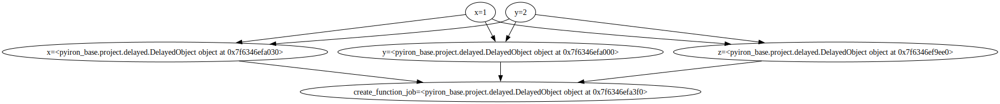

Load Simple Workflow#
Aiida#
from python_workflow_definition.aiida import load_workflow_json
from aiida import load_profile
load_profile()
Profile<uuid='c08748df7ab74ec08c14e5f16cebc987' name='pwd'>
workgraph = load_workflow_json(file_name='workflow_simple.json')
# TODO: Create inputs rather than tasks out of data nodes
workgraph
workgraph.run()
03/24/2025 12:15:40 PM <259264> aiida.orm.nodes.process.workflow.workchain.WorkChainNode: [REPORT] [1069|WorkGraphEngine|continue_workgraph]: tasks ready to run: pickle_node3,pickle_node4
03/24/2025 12:15:49 PM <259264> aiida.orm.nodes.process.workflow.workchain.WorkChainNode: [REPORT] [1069|WorkGraphEngine|on_wait]: Process status: Waiting for child processes: 1076, 1083
03/24/2025 12:16:27 PM <259264> aiida.orm.nodes.process.workflow.workchain.WorkChainNode: [REPORT] [1069|WorkGraphEngine|update_task_state]: Task: pickle_node3, type: PYTHONJOB, finished.
03/24/2025 12:16:28 PM <259264> aiida.orm.nodes.process.workflow.workchain.WorkChainNode: [REPORT] [1069|WorkGraphEngine|update_task_state]: Task: pickle_node4, type: PYTHONJOB, finished.
invalid state
03/24/2025 12:16:29 PM <259264> aiida.orm.nodes.process.workflow.workchain.WorkChainNode: [REPORT] [1069|WorkGraphEngine|continue_workgraph]: tasks ready to run: add_x_and_y1
03/24/2025 12:16:35 PM <259264> aiida.orm.nodes.process.workflow.workchain.WorkChainNode: [REPORT] [1069|WorkGraphEngine|on_wait]: Process status: Waiting for child processes: 1098
03/24/2025 12:16:58 PM <259264> aiida.orm.nodes.process.workflow.workchain.WorkChainNode: [REPORT] [1069|WorkGraphEngine|update_task_state]: Task: add_x_and_y1, type: PYTHONJOB, finished.
03/24/2025 12:16:59 PM <259264> aiida.orm.nodes.process.workflow.workchain.WorkChainNode: [REPORT] [1069|WorkGraphEngine|continue_workgraph]: tasks ready to run: add_x_and_y_and_z2
03/24/2025 12:17:04 PM <259264> aiida.orm.nodes.process.workflow.workchain.WorkChainNode: [REPORT] [1069|WorkGraphEngine|on_wait]: Process status: Waiting for child processes: 1111
03/24/2025 12:17:23 PM <259264> aiida.orm.nodes.process.workflow.workchain.WorkChainNode: [REPORT] [1069|WorkGraphEngine|update_task_state]: Task: add_x_and_y_and_z2, type: PYTHONJOB, finished.
03/24/2025 12:17:25 PM <259264> aiida.orm.nodes.process.workflow.workchain.WorkChainNode: [REPORT] [1069|WorkGraphEngine|continue_workgraph]: tasks ready to run:
03/24/2025 12:17:25 PM <259264> aiida.orm.nodes.process.workflow.workchain.WorkChainNode: [REPORT] [1069|WorkGraphEngine|finalize]: Finalize workgraph.
executorlib#
from executorlib import SingleNodeExecutor
from python_workflow_definition.executorlib import load_workflow_json
with SingleNodeExecutor(max_workers=1) as exe:
result = load_workflow_json(file_name="workflow_simple.json", exe=exe).result()
result
6
Jobflow#
from jobflow.managers.local import run_locally
/home/jan/mambaforge/lib/python3.12/site-packages/paramiko/pkey.py:82: CryptographyDeprecationWarning: TripleDES has been moved to cryptography.hazmat.decrepit.ciphers.algorithms.TripleDES and will be removed from cryptography.hazmat.primitives.ciphers.algorithms in 48.0.0.
"cipher": algorithms.TripleDES,
/home/jan/mambaforge/lib/python3.12/site-packages/paramiko/transport.py:253: CryptographyDeprecationWarning: TripleDES has been moved to cryptography.hazmat.decrepit.ciphers.algorithms.TripleDES and will be removed from cryptography.hazmat.primitives.ciphers.algorithms in 48.0.0.
"class": algorithms.TripleDES,
from python_workflow_definition.jobflow import load_workflow_json
flow = load_workflow_json(file_name="workflow_simple.json")
result = run_locally(flow)
result
2025-03-24 12:17:31,659 INFO Started executing jobs locally
2025-03-24 12:17:33,059 INFO Starting job - add_x_and_y (a8004d81-a7b8-41f1-a673-17b4d6e90ebf)
2025-03-24 12:17:33,061 INFO Finished job - add_x_and_y (a8004d81-a7b8-41f1-a673-17b4d6e90ebf)
2025-03-24 12:17:33,062 INFO Starting job - add_x_and_y_and_z (26ddcedb-34b3-4b09-883d-311b2689d870)
2025-03-24 12:17:33,066 INFO Finished job - add_x_and_y_and_z (26ddcedb-34b3-4b09-883d-311b2689d870)
2025-03-24 12:17:33,070 INFO Finished executing jobs locally
{'a8004d81-a7b8-41f1-a673-17b4d6e90ebf': {1: Response(output={'x': 1, 'y': 2, 'z': 3}, detour=None, addition=None, replace=None, stored_data=None, stop_children=False, stop_jobflow=False, job_dir=PosixPath('/home/jan/notebooks/2025/2025-03-22-compare-workflows'))},
'26ddcedb-34b3-4b09-883d-311b2689d870': {1: Response(output=6, detour=None, addition=None, replace=None, stored_data=None, stop_children=False, stop_jobflow=False, job_dir=PosixPath('/home/jan/notebooks/2025/2025-03-22-compare-workflows'))}}
pyiron#
from pyiron_base import Project
from python_workflow_definition.pyiron_base import load_workflow_json
pr = Project("test")
pr.remove_jobs(recursive=True, silently=True)
delayed_object = load_workflow_json(project=pr, file_name="workflow_simple.json")
delayed_object.draw()

delayed_object.pull()
The job add_x_and_y_68901482a2c5221cc845f828aabebd27 was saved and received the ID: 8
The job add_x_and_y_and_z_b671e81aaa4670d81d7eee509650af8d was saved and received the ID: 9
6
pr.job_table()
| id | status | chemicalformula | job | subjob | projectpath | project | timestart | timestop | totalcputime | computer | hamilton | hamversion | parentid | masterid | |
|---|---|---|---|---|---|---|---|---|---|---|---|---|---|---|---|
| 0 | 8 | finished | None | add_x_and_y_68901482a2c5221cc845f828aabebd27 | /add_x_and_y_68901482a2c5221cc845f828aabebd27 | None | /home/jan/notebooks/2025/2025-03-22-compare-workflows/test/ | 2025-03-24 12:17:37.412001 | None | None | pyiron@p200300e77f488c66bae2561c878c14a2.dip0.t-ipconnect.de#1 | PythonFunctionContainerJob | 0.4 | None | None |
| 1 | 9 | finished | None | add_x_and_y_and_z_b671e81aaa4670d81d7eee509650af8d | /add_x_and_y_and_z_b671e81aaa4670d81d7eee509650af8d | None | /home/jan/notebooks/2025/2025-03-22-compare-workflows/test/ | 2025-03-24 12:17:39.161717 | None | None | pyiron@p200300e77f488c66bae2561c878c14a2.dip0.t-ipconnect.de#1 | PythonFunctionContainerJob | 0.4 | None | None |
Python#
from python_workflow_definition.purepython import load_workflow_json
load_workflow_json(file_name="workflow_simple.json")
6